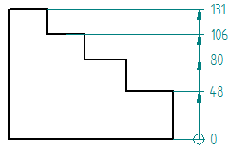
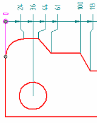
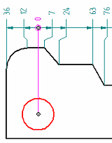

Change Coordinate Origin command
The Change Coordinate Origin command  designates a different dimension in the coordinate dimension group as the origin
dimension (the dimension with the zero value).
designates a different dimension in the coordinate dimension group as the origin
dimension (the dimension with the zero value).
You can select any measurement dimension in the coordinate dimension group as the new origin.
|
Before |
After |
|
 |
|
|
 |
 |

How do I
Place coordinate dimensions automaticallyPlace a coordinate dimension
Place a coordinate dimension using a coordinate system
Place an angular coordinate dimension
Place coordinate dimensions between drawing views
Change the origin dimension in a coordinate dimension group
Change the coordinate origin value
Learn more
Ordinate dimensionsCoordinate dimension alignment sets
Adding and removing jogs on coordinate dimensions
Look up more details
Dimension command barCoordinate dimension handles
Automatic Coordinate Dimension command
Automatic Coordinate Dimension command bar
Keypoint Options dialog box
Coordinate Dimension command
Angular Coordinate Dimension command
Lines and Coordinate tab (Dimension Style and Dimension Properties)